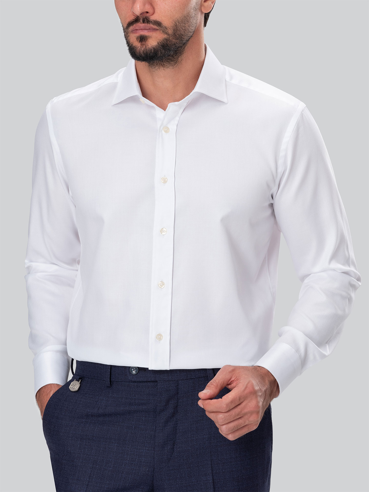

پیراهن آستین بلند سفید
تنخوری: معمولی
6,600,000 تومان
شرح محصول
پیراهنهای کلاسیک هاکوپیان در طیف متنوعی از رنگ و طرح ارائه میشوند. در این پیراهنها هیچگونه الیاف مصنوعی استفاده نشده است و کلیه پارچهها از الیاف پنبه تولید شدهاند. پارچه این پیراهنها به دلیل آن که مانع از گردش هوا نمیشود خنکتر از سایر پارچهها است، همچنین به راحتی شسته و تمیز میشوند. پارچههای استفادهشده در این پیراهنها به دلیل طبیعی بودن الیاف چروک پذیرند بنابراین دانستن نحوه صحیح استفاده و مراقبت از آنها لازم و ضروری است.
مشخصات محصول
کدکالا: 089-0436141 ترکیبات پارچه: 100% پنبه قد: متوسط کشور تولید کننده پارچه:اتحادیه اروپا فصل: همه فصول زمان تولید: کلکسیون 2023
مورد استفاده
اداری، رسمی